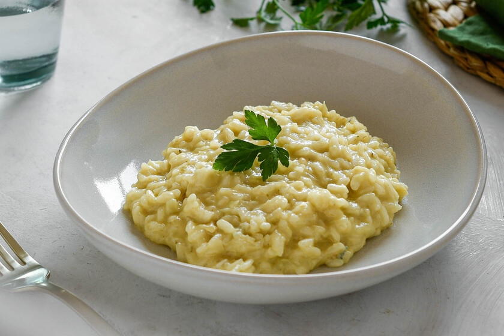
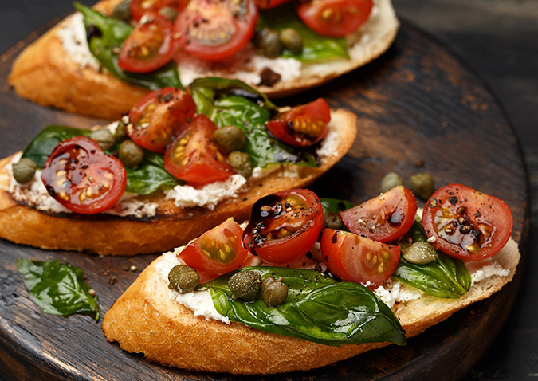

"Sabores Globales: Un Viaje Culinario por el Mundo"
En "Sabores Globales: Un Viaje Culinario por el Mundo",
nos sumergiremos en la extraordinaria experiencia de viajar a través de los platos más exquisitos que nuestro planeta tiene para ofrecer
Italia



Italia es un país ubicado en el sur de Europa, conocido por su rica historia, arte, arquitectura y, por supuesto, su excepcional gastronomía.
Cultura Culinaria:
La cocina italiana es famosa en todo el mundo por su simplicidad y énfasis en ingredientes frescos y de alta calidad. La comida es un componente fundamental de la vida diaria en Italia y se considera un arte.
Ingredientes Destacados:
- Vino: Italia es uno de los mayores productores de vino del mundo, con una tradición vinícola que se remonta a siglos.
- Pasta: Italia es famosa por sus diversas formas y variedades de pasta, desde spaghetti hasta lasañas y risottos.
- Queso: Italia es hogar de una amplia variedad de quesos, como el Parmesano, el Mozzarella, el Gorgonzola y muchos más.
Tradiciones Culinarias:
- La Passeggiata: Una tradición nocturna donde la gente sale a dar un paseo relajado por las calles después de la cena.
- Aperitivo: Antes de la cena, es común disfrutar de un aperitivo, que puede consistir en bebidas y pequeños bocadillos.
- Festivales de Comida: Italia celebra numerosos festivales dedicados a la comida, donde se destacan productos locales y especialidades regionales.